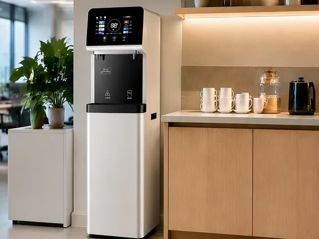
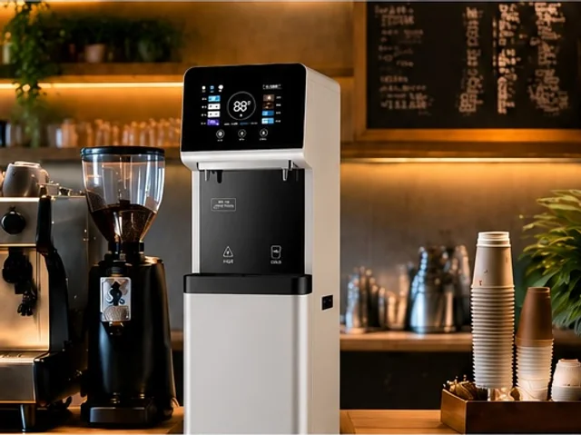
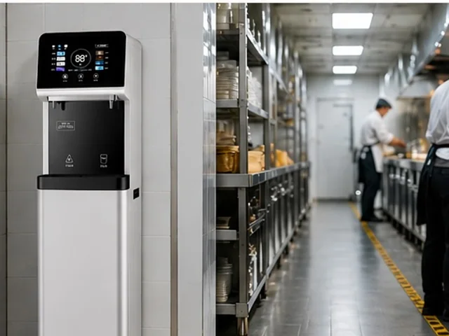

E600-S Commercial RO Water Dispenser
E600-S Commercial RO Water Dispenser — Available With or Without a Payment System — Cabinet Material: Galvanized steel and tempered glass.
View Product
The E600-S-Min is a compact commercial RO water dispenser for offices, cafes, hotel kitchens and other managed drinking-water points. Its white or gray cabinet can be configured with 100G or 400G reverse-osmosis purification, a 5 L or 10 L hot tank, TDS monitoring and a filter-life reminder.
Branding note: KAMAMUTA shown on the sample units is display branding. OEM and private-label projects can specify the badge, control-panel artwork, manuals and carton design.
The cabinet format can be planned for staff hydration, beverage preparation or back-of-house drinking-water service.



| Model | E600-S-Min |
|---|---|
| Product type | Compact floor-standing commercial RO water dispenser |
| Net dimensions | 400 x 400 x 1450 mm |
| Packing dimensions | 465 x 465 x 1495 mm |
| RO capacity | 100G or 400G, selected by project |
| Purified water flow | 0.26 L/min with 100G or 1.05 L/min with 400G configuration |
| Hot water output | 20 L/h |
| Hot tank options | 5 L (1000 W) or 10 L (1500 W), according to the supplied configuration sheet |
| Electrical configuration | 220 V, 50 Hz; heating rating is confirmed with the selected tank before quotation |
| Standard outlets | One hot-water outlet and one ambient-water outlet |
| Cooling options | 0.6 L electronic cooling or 8 L compressor cooling; rating confirmed with the chosen cooling package |
| Ambient-water tank | Deep-drawn SUS 304 stainless-steel tank |
| Cabinet construction | 0.8 mm galvanized steel with stainless-steel parts, anti-rust treatment and three-proof powder coating |
| Optional pressure tank | Built-in 3.2-gallon tank; one main unit may supply one or two satellite dispensers after site engineering |
| Control option | 365-day countdown or IoT universal control board |
| Cabinet colors | White or gray |
| Weight | 35 kg net; 38 kg packed |
For an accurate quotation, provide the expected user count, inlet-water analysis, peak-use pattern, required temperatures, electrical standard, available floor area, order quantity and destination. These details determine the RO output, storage arrangement, cooling package and service parts.
The E600-S-Min uses a narrow floor-standing cabinet for locations that need an integrated purifier without a separate countertop appliance. The two finish options help distributors coordinate the unit with office pantries, cafe counters and hotel service areas.
The 100G option supports moderate point-of-use demand, while 400G provides higher purified-water flow. Where a project needs additional outlets, the optional 3.2-gallon pressure tank and satellite-dispenser layout must be checked against pipe length, pressure and simultaneous use.
The E600-S-Min uses a different compact cabinet and control-panel design while sharing the configurable 100G/400G purification, hot-tank and monitoring platform confirmed for the E600-S range.
The supplied product presentation shows white and gray cabinet versions. Final color, badge and panel artwork are confirmed before production.
Yes. Capacity selection should reflect inlet-water quality, daily consumption, peak demand and the planned storage or distribution arrangement.
No. Cooling and the built-in 3.2-gallon pressure tank are optional configurations and must be listed in the quotation request.
Provide quantity, destination, user count, inlet-water analysis, RO capacity, hot-tank size, cooling requirement, voltage, cabinet color, branding files, control option and packaging requirements.
E600-S Commercial RO Water Dispenser — Available With or Without a Payment System — Cabinet Material: Galvanized steel and tempered glass.
View Product
Commercial Stainless Steel RO Water Dispenser E900-K27 — Size: 800 x 480 x 1520 mm; Hot tank: 27L.
View Product
Vertical Water Dispenser MT-E600 — Filtration: PP, CTO, GAC, UF or RO module options.
View ProductSend the installation environment, expected users, inlet-water conditions, selected RO output, hot-tank and cooling requirements, cabinet color, branding files, quantity and destination.